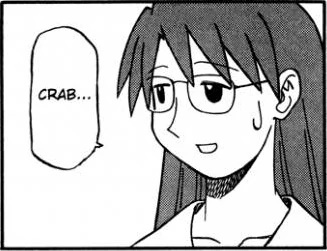
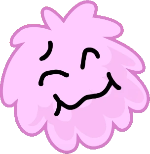
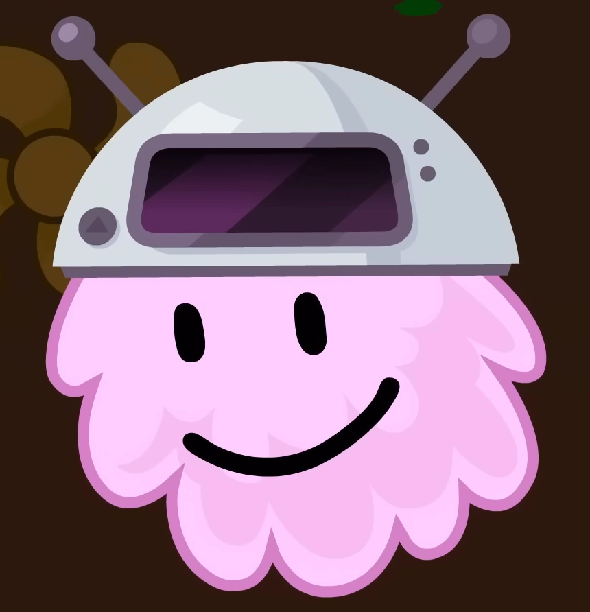
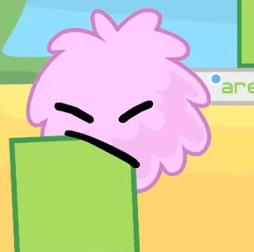

KINLIST
these aren’t really in any particular order, I consider all of these characters to be “literally me”
Lain Iwakura/Lain of the Wired (Serial Experiments Lain)
okay, I actually make an exception for lain. lain is quite literally me on levels higher than any other character present here
Mai Minakami (Nichijou/My Ordinary Life)
one of the most autistic girls of all time (keyword: one of. lain still stands on top...)


![The Mai character single album cover, which has Mai in a mostly-white void with a green Nichijou logo occupying the floor she's knelt on top of, her hands facing opposite directions and her torso remaining parallel to the floor as her face glances the viewer. She's wearing a lavender V-neck sweater, a white button-up undershirt, a long burgundy skirt and black socks. Surrounding Mai are her dogs, of which her cat is laying on her torso, on the verge of falling off, a Maitreya statue, a knight helmet she previously wore to a late Halloween activity with Yuuko, a stack of books neatly closed, and two open books lying on top of each other with their spines facing up.](images/kins/mai3.png)

Mai Minakami on the Nichijou Fandom Wiki (via BreezeWiki)
Mai Minakami on Wikipedia
"Mai no Namida no Amidanyorai" from her respective character album
Koyomi "Yomi" Mizuhara (Azumanga Daioh)
I like being a semi-tall girl and I love food. also glasses


Koyomi "Yomi" Mizuhara on the Azumanga Daioh/Yotsuba&! Fandom Wiki (via BreezeWiki)
Koyomi "Yomi" Mizuhara on Wikipedia
"Oishii Kimi Tachi (Delicious Everybody)" from her respective character album
Patchouli Knowledge (Touhou Project)
she's purple. she's a librarian. she's a WIZARD. she's literally me


Patchouli Knowledge on the Touhou Wiki
Patchouli Knowledge on the Touhou Fandom Wiki (via BreezeWiki)
Puffball (BFDIA/BFB/TPOT)
she was like. my first ever kin probably. when I took care of my puffball mii more than the mii meant to represent me in tomodachi life I should've known it was all downhill from there
  Puffball on the Battle for Dream Island Fandom Wiki (via BreezeWiki)
Maya Fey (Ace Attorney)
purple and sily
![Maya Fey from the Ace Attorney series, with her arms extended and her fingers interlaced behind her back while looking over her shoulder toward the viewer. She has long, black hair with long side bangs with purple spherical clips near their ends. Her hair also has a small bun above her head supported by a small purple hairband, with a larger purple hairband at the end of her hair giving it a narrow tail. She has black eyes. Presently, we can see her wear a purple robe and a white dress that extends below her robe and rests above her knees with a tyrian obi wrapped around it, with a large bow on the front. She has several purple bracelets around her wrists and is wearing black zori with purple straps.](/images/kins/maya1.png)


Maya Fey on Wikipedia
Maya Fey on the Ace Attorney Fandom Wiki (via BreezeWiki)
Kasane Teto (UTAU/Synthesizer V AI)
she's my favorite utau.... so i decided she was me. i love baguette and margarine
![Kasane Teto, a vocal synthesizer who is a Chimera but presents as a human. She has pink hair which has drill-like pigtails referred to as twindrills, as well as a cowlick on the middle of her head. She has red eyes. She is wearing a gray button-up tanktop and skirt with pink accents around the ends and center, and half-sleeves showing her upper arms, where her pink 0401 can be seen. She is wearing a pink belt with a triangular geometric pattern that forms a loop which rests on her left thigh. She is wearing purple headphones over her ears. She is also wearing black thigh-high boots with pink soles and pink accents at the top. Her right hand is resting on her hip while her left hand is pointing her thumb towards her face](/images/kins/teto1.png)